Questão 1 · Prof ilaxia Antibiótica · 4000114982Homem, 62 anos, com diagnóstico de cirrose hepática por álcool, chegou ao pronto socorro referindo um episódio de hematêmese. Exame físico: consciente, orientado, ictérico (+2/4+), descorado (+/4+), presença de ginecomastia e de aranhas vasculares em tórax e dorso, edema de membros inferiores (+2/4+); sem sinais de ascite. Endoscopia digestiva alta evidenciou varizes esofágicas de médio calibre com ""white nipple"". Realizada ligadura elástica sem intercorrências. Qual é a conduta mais adequada?
A Vitamina K.
B Norfloxacina.
C Furosemida.
D Omeprazol.
Questão 2 · Avaliação dos pacientes com monoartrite · Artrite séptica · Artropatias inf ecciosas · 4000114957Homem, 38 anos, refere dor e edema em joelho esquerdo, inéditos, de início há dois dias e com progressão rápida até impedir a deambulação. Não sabe se teve febre. Nega doenças e tratamentos. Ao exame: temperatura axilar: 37,6 °C; edema, hiperemia e calor em joelho esquerdo, com sinal da tecia e aumento de volume de bolsa suprapatelar. Qual tipo celular mais contribui para o quadro clínico descrito?
A Neutrófilo.
B Fibroblasto sinovial.
C Macrófago sinovial.
D Condrócito.
Questão 3 · Diagnóstico · 4000114935Homem, 20 anos, previamente assintomático. Há 20 dias refere dispneia que progrediu em poucos dias para aos mínimos esforços, acompanhada de fadiga e edema que evoluiu para anasarca. Refere quadro ""gripal"" há 30 dias, tratado com sintomáticos. Exame físico: edema depressível, indolor, ++/++++ bilateralmente, em membros inferiores até joelhos; jugulares distendidas até 8 cm acima do manúbrio esternal, em decúbito a 45 graus, com variação respiratória normal. Temperatura axilar = 36,5 ºC; FC = 98 bpm, rítmico, precórdio sem anormalidades, estertores crepitantes em ambas as bases pulmonares posteriormente. ECG com alterações difusas de repolarização ventricular. RX de tórax com ICT = 0,65 e congestão para-hilar bilateral. ECG (DII) ( figura A) e registro invasivo de pressão arterial sistêmica (mmHg) no gráfico ( figura B). Qual é a alteração fisiopatológica mais provável?

A Derrame pericárdico de grande volume.
B Hipertensão pulmonar emboligênica.
C Aumento do fluxo pulmonar por cardiopatia congênita.
D Disfunção biventricular sistólica grave.
Questão 4 · Suporte Nutricional Parenteral · Cirurgia · 4000114903Homem, 55 anos, apresentou obstrução intestinal, por inúmeras bridas decorrentes de tumor desmoide. Submetido à extensa ressecção do intestino delgado. Em pós- operatório, evoluiu com vômitos de difícil controle. No serviço de origem, foi feita a nutrição parenteral pronta para uso contendo glicose e aminoácidos, sem adição de solução de vitaminas e minerais. Após 2 meses recebendo apenas essa terapia nutricional, apresentou diplopia, nistagmo, perda da memória, confusão mental e confabulação. Qual a deficiência nutricional mais provável?
A Niacina.
B Vitamina B12.
C Tiamina.
D Piridoxina.
Questão 5 · Diagnóstico · 4000114879Mulher, 75 anos, portadora de hipertensão arterial sistêmica e diabetes mellitus bem controlados. Queixa-se de urgência miccional há 6 meses, associada a perdas urinárias frequentes, com necessidade do uso de absorvente e redução da ingestão hídrica. Ao exame: BEG, consciente e orientada. PA: 128 x 62 mmHg, FC: 80 bpm. Abdome sem massas palpáveis. Exame neurológico sem alterações. Qual é a avaliação diagnóstica inicial mais adequada?
A Resíduo pós-miccional.
B Ultrassonografia de vias urinárias.
C Estudo urodinâmico.
D Urina tipo I.
Questão 6 · Diagnóstico eletrocardiograf ico da parede do inf arto · 4000114857Homem, 45 anos, professor universitário, maratonista competidor frequente e sem fatores de risco para doença arterial coronária, muito estressado no trabalho, perdeu a esposa há poucos dias em acidente automobilístico. Refere dor intensa (8/10) retroesternal, sem irradiação, que persiste há duas horas. Recebeu de vizinho por via sublingual 1 comprimido de dinitrato de isossorbida há cerca de uma hora. Exame físico: FC = 50 bpm, rítmico, PA = 80/60 mmHg. Precórdio sem frêmitos ou sopros e sem estertores crepitantes pulmonares. ECG da entrada no hospital (ver figura). Qual é o diagnóstico mais provável ?
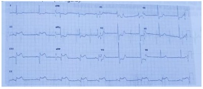
A Infarto agudo do miocárdio com oclusão da coronária direita.
B Síndrome de ""takotsubo"" (""coração partido"") com coronárias normais.
C ""Coração de atleta"" com repolarização ventricular precoce.
D Pericardite aguda com derrame pericárdico.
Questão 7 · Demências · Clínica Médica · Síndrome Demencial · 4000114811Homem, 75 anos, professor universitário aposentado. Veio na consulta acompanhado do lho, queixando-se de esquecimento progressivo há um ano. Esquece de dar recados, pagar contas e senhas dos cartões de crédito e se perdeu na rua há uma semana quando foi pegar a neta na escola. Exame físico: BEG, consciente e orientado no tempo e no espaço. Neurológico: sem alterações. Mini-exame do estado mental: 29/30. Escala de depressão geriátrica: 2/15. Exames laboratoriais: TSH = 2,5 µIU/mL (VN: 0,4-4,5); vitamina B12 = 756 pg/mL (VN: 174,0-878,0), VDRL não reagente, anti-HIV não reagente. Hemograma, função renal, eletrólitos e transaminases normais. Tomogra a de crânio: redução difusa do volume encefálico, proporcionada para a faixa etária. Qual é o diagnóstico mais provável?
A Transtorno depressivo.
B Comprometimento cognitivo leve.
C Queixa subjetiva de memória.
D Síndrome demencial.
Questão 8 · Manejo das crises álgicas · 4000114781Homem 18 anos, com anemia falciforme, apresenta diarreia aquosa há 2 dias, sem sangue ou muco. Hoje iniciou quadro de dor em membros inferiores. Nega febre, dispneia ou outras queixas. Exame físico: desidratado +/4+, consciente e orientado, ictérico +/4+ FC: 104 bpm. PA: 120 x 80 mmHg. Ap. respiratório sem alterações, saturação de O₂ em ar ambiente 93%. Abdome: sem alterações. Extremidades: dor à palpação dos membros inferiores, sem sinais ogísticos. Exame laboratoriais: Hb: 9,8 g/dL, Ht: 30%, bilirrubina total: 4 mg/dL, bilirrubina direta: 2,1 mg/dL. Além da hidratação endovenosa, qual é a conduta inicial mais adequada?
A Morfina.
B Suplementação de oxigênio.
C Hidroxiureia.
D Concentrado de hemácias.
Questão 9 · Doença de von Willebrand · 4000114756Mulher, 19 anos, em avaliação pré-operatória de rinoplastia evidenciou-se tempo de tromboplastina parcial ativado (TTPa) prolongado. Refere epistaxes frequentes e equimoses espontâneas desde a infância, e sangramento uterino anormal (ciclos menstruais com duração de mais de 10 dias, com coágulos e necessidade de absorvente noturno contínuo). Mãe com sintomas menstruais semelhantes. Nega outros familiares com história de sangramentos. Nega hemartroses. Nega procedimentos cirúrgicos prévios. Exame físico sem alterações. Exames laboratoriais: Hb: 11,9 g/dL; VCM: 79 fL; GB: 6.100/µL; plaquetas: 280.000/µL; TTPa: 54 segundos (VN < 44,6); TP (Tempo de protrombina): 12,5 segundos (VN < 17,3). Qual elemento do sistema hemostático da paciente mais provavelmente está disfuncionante?
A Fator de von Willebrand.
B Plaquetas.
C Fibrinogênio.
D Fator VIII da coagulação.
Questão 10 · Síndrome de veia cava superior · 4000114730Homem, 50 anos, com dispneia progressiva, edema e hiperemia facial há 10 dias. Refere tosse produtiva com estrias de sangue e perda ponderal. Nega febre. É tabagista, 60 maços/ano. Exame físico: REG, dispneia leve em repouso; PA = 100 x 60 mmHg; FC = 100 bpm; FR = 20 ipm; saturação de O₂=90% em ar ambiente. Pletora e edema de face e andar superior de tronco. Distensão de veias do pescoço. MV globalmente diminuído, com roncos difusos. Qual é o diagnóstico mais provável?
A Tromboembolismo pulmonar.
B Tamponamento pericárdico.
C Síndrome da veia cava superior.
D Pericardite constritiva.
Questão 11 · Tratamento · Diagnóstico · Sinais de alarme · 4000114700Mulher, 19 anos, refere febre, mialgia, cefaleia e náuseas há 6 dias. Exame físico: BEG, corada. Aparelho cardiovascular: 2 bulhas rítmicas e normofonéticas, sem sopros; FC: 96 bpm; PA: 98x62 mmHg. Aparelho respiratório: MV reduzido no 1/3 inferior do hemitórax direito; FR: 26 ipm. Abdome: RHA presentes; dor moderada à palpação profunda em mesogástrio, sem visceromegalias. Edema +/4+ depressível em MMII. Pele: petéquias em ambas as pernas. Exames laboratoriais: Hemograma: Hb = 14,2 g/dL; Ht: 42%; glóbulos brancos: 2.900/mm³ (segmentados: 34%; linfócitos: 61%); plaquetas: 18.000/mm³. AST: 122 (VR < 32 U/L); ALT: 62 (VR < 31 U/L). Pesquisa do antígeno NS1 para dengue negativo. Radiogra a de tórax: (ver figura). Ultrassonografia de abdome: ascite de moderado volume. Qual é a conduta mais adequada?
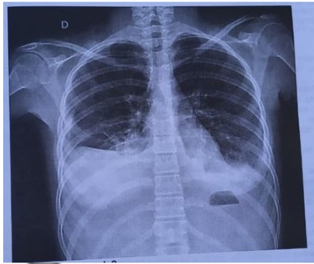
A Esfregaço do sangue periférico e corticoide.
B Paracentese e diurético.
C Sorologia para dengue e hidratação.
D Toracocentese e antibiótico.
Questão 12 · Erupção acneif orme · 4000114628Homem, 16 anos, em tratamento para pên go foliáceo há 6 meses com corticoterapia sistêmica oral e pulsoterapia com dexametasona. Há 1 mês notou lesões na face e no tronco ( guras), sem outras alterações no exame físico. Qual é o diagnóstico mais provável das lesões apresentadas?

A Sífilis secundária.
B Púrpura medicamentosa.
C Erupção acneiforme.
D Impetigo bolhoso.
Questão 13 · Radiograf ia de tórax · Manejo da exacerbação em unidade de terapia intensiva UTI · 4000114573Mulher, 19 anos, asmática, refere chiado no peito, febre e dispneia há 3 dias com piora progressiva, mesmo com uso de corticoide e aerossol. Exame físico na admissão: murmúrio vesicular abolido bilateralmente, com saturação de O₂ de 90% em ar ambiente. Após a administração de corticoide, salbutamol e magnésio, passou a apresentar sibilos e som claro pulmonar bilateralmente. Mantinha taquipneia, sendo submetida a intubação orotraqueal. Evoluiu com queda da saturação e a radiografia abaixo. Qual é a condição clínica mais provável neste momento?
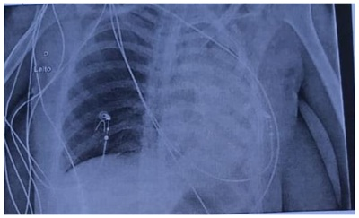
A Pneumonia.
B Derrame pleural.
C Atelectasia.
D Pneumotórax.
Questão 14 · Exame dermatoneurológico · Diagnóstico · Apresentação clínica · 4000114523Mulher, 56 anos, sem comorbidades e em uso de vitaminas para formigamento em mãos e pés, apresentou as lesões de pele há 7 meses (figura). Qual é a conduta diagnóstica mais adequada?
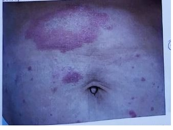
A Biópsia de pele.
B Eletroneuromiografia.
C Estesiometria.
D Micológico direto.
Questão 15 · Distúrbios eletrolíticos · 4000114479Homem, 35 anos, etilista (1 litro de destilado por dia), internado há 2 dias devido à queda da própria altura com fratura de ulna direita. Apresenta quadro de agitação psicomotora, evoluindo com diaforese, tremores, vômitos, crise convulsiva e urina escurecida. Exame físico: REG, desidratado, agitação psicomotora intensa, tremores de extremidades, sudoreico, sem sinais menígeos ou dé cits focais. Tomogra a de crânio sem alterações. Qual é o eletrocardiograma esperado deste paciente?
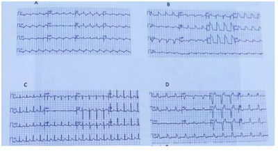
A Figura A.
B Figura B.
C Figura C.
D Figura D.
Questão 16 · Manometria Esof ágica · Acalásia Megaesôf ago · 4000114427Mulher, 55 anos, procedente do Vale do Jequitinhonha, refere disfagia baixa há 2 anos, ora para alimentos sólidos, ora para líquidos, associada a emagrecimento de 6 kg no período. Informa morte súbita em dois irmãos e pai. Endoscopia digestiva alta sem alterações. Qual alteração manométrica é mais provável?
A Relaxamento transitório de esfíncter esofágico.
B Aumento da amplitude das contrações no corpo do esôfago.
C Aperistalse do corpo do esôfago.
D Hipotonia do esfíncter inferior esofágico.
Questão 17 · Diagnóstico · Lúpus Eritematoso Sistêmico LES · 4000114408Mulher, 24 anos, há dois meses apresenta dor, edema e rigidez maior que uma hora em mãos, punhos, ombros e joelhos. Relata sono não reparador, fadiga e alguns episódios de temperatura entre 37,0 e 37,8 °C. Exame físico: bom estado geral. Temperatura axilar: 37,5 °C. Edema, calor e dor em cotovelos, punhos, segunda a quarta metacarpofalangeanas bilateralmente, joelhos e tornozelos; pontos dolorosos (tender points): 14/18. Qual dos diagnósticos abaixo é o mais provável?
A Lúpus eritematoso sistêmico.
B Síndrome da fibromialgia.
C Espondiloartrite não-axial.
D Artrite reacional.
Questão 18 · Tratamento medicamentoso · Biguanida metf ormina · Sulf onilureias · 4000114381Mulher, 66 anos, com hipertensão arterial sistêmica e diabetes mellitus tipo 2 há 20 anos, relata vários episódios de hipoglicemia no último mês. Está em uso de losartana, metformina e gliclazida. Nega poliúria, polidipsia ou alteração do peso. Exame físico sem alterações. Glicemia de jejum = 142 mg/dL e hemoglobina glicada = 6,2% (VR: 4,3-6,1). Qual é o principal exame para diagnóstico do quadro clínico atual?
A Creatinina sérica.
B Potássio sérico.
C Proteinúria.
D Transaminases.
Questão 19 · Espirometria · 4000114358Homem, 74 anos, refere tosse com expectoração clara matutina há 8 anos. Há 5 anos com dispneia aos esforços em progressão; atualmente tem dispneia para andar 100 metros em terreno plano. Por vezes o sintoma é acompanhado de chiado no peito. Tabagista de 1 maço de cigarros por dia há 60 anos. Exame físico sem alterações. Qual achado é su ciente para o diagnóstico da doença mais provável?
A Hipoxemia na gasometria arterial em ar ambiente.
B Redução de capacidade de difusão de monóxido de carbono.
C Enfisema centrolobular na tomografia de tórax.
D Padrão obstrutivo na espirometria pós-broncodilatador.
Revisar: possível letra faltando em enunciado
Questão 20 · Doença Inf lamatória Pélvica · 4000114333Mulher 25 anos, nulípara, tabagista, última menstruação há 13 dias, procura serviço de urgência com queixa de dor em região inguinal esquerda e hipogástrio há 5 dias com piora significativa há 3h, associada a náusea, fraqueza e tontura. O exame clínico geral mostra regular estado geral, descorada, FC = 100 bpm, PA = 105 x 65 mmHg, T = 37,8°C. O abdome apresenta-se bastante sensível à palpação no andar inferior. Observa-se pequena quantidade de material vaginal amarelado sem odor característico. O toque vaginal é muito doloroso e não é possível fazer uma boa avaliação da região da pelve. Exames laboratoriais: 1) representativa da ultrassonogra a transvaginal está mostrada abaixo. A descrição dos achados principais está na legenda da imagem. Com base nas informações descritas, assinale a alternativa que contemple o diagnóstico mais provável e a melhor opção terapêutica.
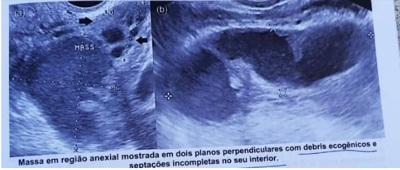
A Abcesso tubo-ovariano; antibiótico terapia endovenosa hospitalar.
B Corpo lúteo hemorrágico; analgesia e observação hospitalar.
C Torção de ovário; laparoscopia com preservação do anexo.
D Tumor anexial provavelmente maligno; ooforectomia e estadiamento.
Questão 21 · Descarga papilar · 4000114288Paciente com 37 anos de idade com queixa de saída de secreção avermelhada pelo mamilo esquerdo há 2 meses. Refere que o uxo é espontâneo. Ao exame, as mamas são simétricas, sem abaulamento ou retração e sem nódulos palpáveis. À expressão mamilar notamos um uxo papilar (ver imagem). Foi realizado ultrassonogra a e mamogra a com BIRADS® 1. Qual a conduta mais adequada para a elucidação diagnóstica?
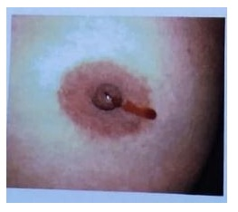
A Coleta de citologia do fluido papilar.
B Biópsia cirúrgica da unidade mamária.
C Realizar ductografia mamária.
D Realizar ressonância magnética.
Questão 22 · Roteiro diagnóstico · 4000114246Adolescente, 13 anos, queixa-se que ainda não menstruou. Relata que a irmã menstruou aos 12 anos. Nega sexarca. Não apresenta outras queixas. Exame físico: apresenta-se em bom estado geral, estatura no percentil 50, IMC 21 Kg/m², mamas estadiamento de Tanner M1 e pelos P4. Genitália externa com pequenos lábios com extensão até a metade da vulva, clitóris de 1 cm até a base, mucosa vulvar avermelhada, hímen integro, vaginometria de 7 cm. Considerando as recomendações da Sociedade Americana de Medicina Reprodutiva, qual a melhor opção para abordagem inicial deste caso?
A Dosar hormônio folículo estimulante.
B Conduta expectante por mais 2 anos.
C Realizar ultrassonografia pélvica.
D Colher cariótipo de sangue periférico.
Questão 23 · Climatério · 4000114220Mulher de 57 anos queixa-se de ondas de calor intensas, dor em queimação e prurido na região genital, e dor intensa nas relações sexuais. Encontra-se em seguimento de câncer de mama tratado há 3 anos e faz uso de tamoxifeno. Assinale a alternativa correta em relação ao esquema terapêutico correto para esta mulher.
A Venlafaxina, hidratante vaginal e lubrificante.
B Hidratante vaginal, laser e lubrificante.
C Paroxetina, estriol local e laser.
D Fluoxetina, promestrieno e laser.
Questão 24 · Quimioprof ilaxia · 4000114200Nuligesta, 19 anos, menarca aos 11 anos, DUM: não recorda, usa anticoncepcional hormonal oral, procura atendimento na urgência referindo ter sofrido estupro há 4 horas atrás. Em relação as pro laxias que esta mulher deve receber, a melhor opção é?
A Levonorgestrel; tenofovir, lamivudina e dolutegravir, azitromicina e ceftriaxona.
B Acetato de medroxiprogesterona, zidovudina e efavirenz, penicilina cristalina e ceftriaxone.
C O tempo decorrido da violência contraindica anticoncepção de emergência e profilaxia para HIV.
D DIU de cobre, zidovudina, lamivudina e lopinavir com ritonavir, azitromicina e penicilina cristalina.
Questão 25 · Def inição · 4000114177Mulher, 21 anos, G0, procura a Unidade Básica de Saúde, pois refere que seus ciclos estão irregulares e o número de dias de sangramento está aumentado. Você pediu um calendário menstrual para avaliação no retorno. Abaixo está o histórico menstrual dos últimos 6 meses. 1° ciclo: 30 dias - 7 dias de sangramento; 2° ciclo: 28 dias - 5 dias de sangramento; 3° ciclo: 33 dias - 6 dias de sangramento; 4° ciclo: 31 dias - 8 dias de sangramento; 5° ciclo: 29 dias - 5 dias de sangramento; 6° ciclo: 36 dias - 8 dias de sangramento; Observando o calendário, qual alternativa apresenta a melhor conduta (de acordo com os critérios de normalidade de ciclo menstrual da Federação Interacional de Ginecologia e Obstetrícia, FIGO, 2018)?
A Orienta que o ciclo está regular e que a duração do sangramento está normal.
B Confirma o diagnóstico de irregularidade menstrual e prescreve contraceptivo oral combinado.
C Orienta que o ciclo está regular, mas a duração está aumentada. Solicita ultrassonografia pélvica.
D Confirma o diagnóstico de irregularidade menstrual e solicita FSH, prolactina e TSH.
Questão 26 · Tratamento · 4000114162Paciente encaminhada a hospital terciário para avaliação e conduta. No encaminhamento está descrito que a paciente tem perda urinaria involuntária e exames de urina tipo I normal e urocultura negativa. Solicitado estudo urodinâmico apresentado abaixo. Qual a conduta terapêutica mais adequada para esta paciente?

A Solifenacina.
B Imipramina.
C Cirurgia com sling.
D Cirurgia de Burch.
Questão 27 · Prolapsos de órgãos pélvicos · 4000114129Paciente com 48 anos procura atendimento médico referindo que há 6 meses notou aparecimento de uma ""bola"" na vagina que tem atrapalhado nas relações sexuais. Nega perdas urinarias ou outras doenças sistêmicas. Após exame físico o ginecologista descreve os achados da seguinte maneira: Qual a melhor opção terapêutica para esta paciente?
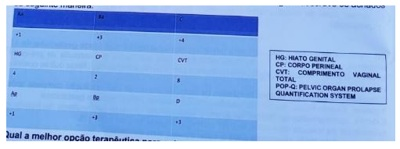
A Colpoperineoplastia anterior e posterior.
B Colpocleise.
C Histerectomia vaginal com correção de prolapso.
D Fisioterapia de assoalho pélvico.
Questão 28 · BIRADS 3 · 4000114100Mulher com 41 anos, G2P2, lactou duas vezes por até um ano, refere que fez a primeira mamogra a de rastreamento há quinze dias. Como o laudo mostrou BI- RADS®3, veio à consulta para esclarecer algumas dúvidas. Deseja nova gestação e gostaria de engravidar novamente o mais breve possível, pois teme ter di culdades e está preocupada com possível gestação de risco. Qual orientação dar a esta paciente?
A Pede para retornar em um ano com nova mamografia e, também, ultrassonografia mamária.
B Prossegue a investigação com novos exames de imagens e até biópsia se necessário, antes da gravidez
C Pede para a paciente aguardar dois anos, mantendo seguimento semestral com mamografia.
D Tentar engravidar, pois na classificação BI-RADS®3 o risco malignidade é baixo.
Questão 29 · DIU de cobre · 4000114084Mulher, 26 anos, G0, comparece à Unidade Básica de Saúde com desejo de uso de DIU de cobre. Última menstruação há 8 dias. Refere que tem neoplasia intraepitelial cervical 1 (NIC 1) diagnosticada há 6 meses e faz seguimento clínico. Nega outras doenças. Não tem vícios. Não está usando nenhum método contraceptivo. Ao exame: PA: 110 x 70 mmHg, IMC: 23 Kg/m², exame físico geral e segmentar normal. Exame ginecológico apresentando candidíase vulvovaginal (primeiro episódio), sem outras anormalidades. Além de prescrever o tratamento de candidíase nesta consulta, quais condutas devem ser tomadas em relação ao caso clínico considerando os critérios de elegibilidade da Organização Mundial de Saúde (2015)?
A Orientar outro contraceptivo até normalizar a citologia pois a presença de NIC 1 contraindica a inserção do DIU.
B Inserir o DIU nesta consulta e orientar usar método contraceptivo adicional por 7 dias.
C Orientar preservativo e marcar para inserir o DIU no próximo ciclo menstrual quando estiver menstruada.
D Inserir o DIU nesta consulta sem a necessidade de orientação de método contraceptivo adicional.
Questão 30 · Tireotoxicose gestacional transitória · Alterações na f isiologia tireoidiana durante a gestação · 4000114068Paciente de 21 anos, secundigesta (um parto normal anterior), com idade gestacional de 11 semanas, retorna trazendo os exames complementares solicitados em consulta de pré-natal anterior. Refere náuseas matinais, que melhoram com uso de antieméticos. Nega outras queixas clínicas e obstétricas. Antecedentes pessoais: história pregressa de tireoidite pós-parto com resolução completa após 3 meses. Exame físico: dentro dos padrões de normalidade para o período gestacional. Exames complementares: dentre os exames laboratoriais, observa-se resultado de hormônio estimulador da tireoide com valor de 0,07 µUI/mL e tiroxina livre de 0,9 ng/dL; Qual a conduta mais adequada para o caso clínico apresentado?
A Encerrar investigação e manter seguimento de pré-natal de risco habitual.
B Prescrever metimazol e solicitar dosagem de função tireoidiana após seis semanas.
C Prescrever propiltiouracil e solicitar dosagem de função tireoidiana após seis semanas.
D Solicitar dosagem de hormônio estimulador da tireoide no segundo trimestre de gestação.
Questão 31 · Medicamentoso · 4000114042Paciente de 20 anos, primigesta, com 22 semanas de idade gestacional, portadora de diabetes mellitus tipo 1, sem outras comorbidades, retorna à consulta de pré-natal sem queixas clínicas ou obstétricas. Em tratamento regular com atividade física, controle dietético e insulinoterapia com múltiplas doses diárias de insulina Neutral Protamine Hagedom e insulina regular. Exame físico geral e obstétrico dentro dos padrões de normalidade para o período gestacional. Ganho de peso de 300 g em uma semana. A análise do per l glicêmico da última semana está demonstrada na tabela a seguir: Qual a conduta mais adequada para este caso clínico?
A Aumentar dose de insulina NPH e manter dose de insulina regular conforme prescrição anterior.
B Reduzir dose de insulina NPH ao deitar e manter dose de insulina regular em relação à prescrição previa.
C Manter dose de insulina NPH e regular de acordo com a última prescrição do pré- natal.
D Manter dose de insulina NPH e aumentar dose de insulina regular em relação à última prescrição.
Questão 32 · Complicações · 400011398926 anos, G2P1A0 (1 parto normal anterior a termo sem intercorrências) 14 semanas de gestação gemelar dicoriônica, comparece à consulta para iniciar pré-natal. Antecedentes pessoais nega patologias e refere gravidez espontânea. Ao exame: peso: 92 kg, estatura 1,65 cm, bom estado geral com pressão arterial: 105 x 72 mmHg. Altura uterina de 16 cm, ausculta fetal do feto A de 142 bpm e do feto B de 156 bpm. Qual a conduta medicamentosa adequada?
A AAS e enoxaparina.
B AAS isoladamente.
C Enoxaparina e cálcio.
D AAS e cálcio.
Questão 33 · Artéria cerebral média ACM · Conduta obstétrica · 4000113970Secundigesta (G2P0A1), 29 anos, 33 semanas, portadora de hipertensão arterial crônica, em uso de anti-hipertensivos com bom controle. Comparece para consulta de pré-natal, sem queixas. Exames laboratoriais normais. Exame físico: pressão arterial 140x90 mmHg, restante do exame físico geral normal, altura uterina 30 cm, sem contrações, frequência cardíaca fetal 130 bpm. A cardiotocogra a realizada hoje está demonstrada abaixo ( figura). A ultrassonogra a obstétrica de hoje mostrou feto único, anatomia normal, peso estimado de 1793 gramas (percentil 4), placenta grau I, maior bolsão de líquido amniótico de 3,2 cm, per l biofísico fetal de 8/8. Doppler da artéria umbilical: IP = 1,12 (percentil 85). Qual alternativa possui a melhor conduta para o caso?
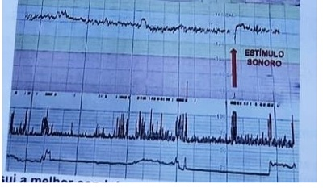
A Realizar estudo Doppler da artéria cerebral média fetal.
B Realizar nova cardiotocografia em 6 horas.
C Resolver a gestação após um ciclo de corticosteroide.
D Avaliar índices de impedância das artérias uterinas maternas.
Questão 34 · Distocia de dilatação · Distocia de dilatação · Primeiro periodo dilatação · 4000113938Primigesta, 30 anos, com 40 semanas, é internada na fase ativa do trabalho de parto, com boa vitalidade fetal na admissão. Pré-natal sem intercorrências. Ela traz um plano de parto no qual rejeita o uso de ocitócicos, analgesia farmacológica e episiotomia. A parturiente se mantém bastante ativa, com alternância de posturas. As 21 horas, ela é reavaliada, apresentando sinais vitais normais, altura uterina de 37 cm, atividade uterina de 4 contrações de 50 segundos/10 minutos e batimentos cardíacos fetais sem desacelerações. O registro gráfico do trabalho de parto está representado na figura. Escolha a alternativa com a melhor conduta nesse caso.
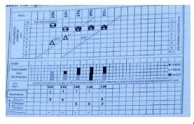
A Indicar resolução de gestação por parto cesárea.
B Promover corioamniorrexe artificial imediatamente.
C Convencer a paciente a aceitar analgesia farmacológica.
D Explicar sobre a necessidade de ocitocina endovenosa.
Questão 35 · Cardiotocograf ia intraparto · Primeiro periodo dilatação · 4000113900Primigesta, 22 anos, com 41 semanas, internou no início da fase ativa da dilatação com contrações moderadas e perda de tampão mucoso. Sem outras queixas. Pré-natal sem intercorrências. Há 30 minutos, queixou-se de muita dor e solicitou analgesia farmacológica. Foi submetida à bloqueio combinado raqui-peridural. Reavaliação após analgesia: sinais vitais maternos normais, atividade uterina de 4 contrações moderadas de 40 segundos em 10 minutos. A avaliação da vitalidade fetal está demonstrada na cardiotocogra a exibida abaixo ( figura). Toque: colo no, centrado, dilatado 8 cm, feto cefálico, em zero de DeLee, bolsa íntegra. Escolha a melhor conduta na assistência a este trabalho de parto.
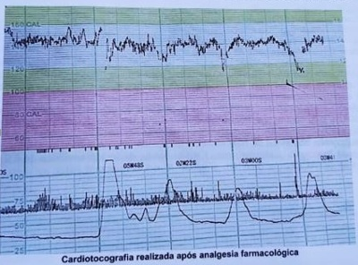
A Realizar ausculta intermitente da frequência cardíaca fetal.
B Promover corioamniorrexe artificial.
C Indicar resolução da gestação por cesárea.
D Instituir manobras de reanimação fetal.
Questão 36 · Parto · 4000113857Primigesta, 23 anos, não realizou pré-natal, 39 semanas, moradora de rua, é trazida a maternidade pelo SAMU com queixa de dor no baixo ventre. Ao exame está normotensa, atividade uterina: 2 contrações fracas de 30 segundos em 10 minutos, BCF 148 bpm, sem desacelerações. Toque vaginal apresenta 3 cm de dilatação. O teste rápido para HIV apresenta resultado positivo, teste para sífilis é não reagente. Qual a conduta mais adequada para esta paciente?
A Iniciar AZT intravenoso e recomendar parto por via obstétrica.
B Iniciar AZT intravenoso e indicar cesárea após 3 horas.
C Iniciar raltegravir e indicar cesárea após 3 horas.
D Indicar parto cesárea imediatamente.
Questão 37 · Tratamento · 4000113837Paciente de 29 anos, secundigesta (parto normal anterior há 3 anos), idade gestacional de 33 semanas, chega ao pronto atendimento da maternidade com história de contrações uterinas há três horas, dilatação cervical de 4 cm e polo cefálico em 1+ De Lee, evoluindo há 10 minutos com dor abdominal importante contínua e com aumento súbito de tônus uterino e alteração de vitalidade fetal durante a avaliação clínica. Ao exame físico: pressão arterial 80 x 50 mmHg, frequência cardíaca 115 bpm, frequência respiratória 24 irpm, Aparelhos respiratório e cardiovascular: dentro dos padrões de normalidade. Exame obstétrico: altura uterina = 35 cm, tônus uterino aumentado, ausculta fetal = 114 bpm com desacelerações até 97 bpm, movimentação fetal ausente. Toque vagina: colo uterino grosso, posterior, consistência rme, pérvio 2 cm, apresentação fetal cefálica. Em associação aos cuidados de estabilização clínica, qual a conduta imediata mais adequada?
A Parto cesárea.
B Amniotomia.
C Ácido tranexâmico.
D Corticosteroide.
Questão 38 · Monitorização pós tratamento · 4000113818Gestante G3P1A1, 27 anos, 16 semanas de gravidez, veio encaminhada de unidade básica por diagnóstico de sí lis. Referia inicio recente de uma nova parceria sexual e história de que há dois meses apresentou lesão genital única, ulcerada e indolor (pequeno lábio), a qual desapareceu sem tratamento. Há duas semanas iniciou o pré- natal, verificando-se que a quimioluminescência para sí lis era positiva e o Rapid Plasm Reagin (RPR) era de 1;128. Demais exames da rotina laboratorial pré-natal sem alterações. Ela e o parceiro foram tratados corretamente com penicilina benzatina e receberam todas as orientações para evitar novas infecções. Qual é a dinâmica prevista para a redução dos anticorpos reagínicos da sí lis no controle deste tratamento?
A Duas diluições em 90 dias.
B Três diluições em 120 dias.
C Cinco diluições em 180 dias.
D Uma diluição em 60 dias.
Questão 39 · Conduta na RPM entre 24 a 33 67 semanas · 4000113794Primigesta, 24 anos, 33 semanas, apresenta-se ao centro obstétrico com queixa de perda líquida genital em grande quantidade há 18 horas. Refere contrações esporádicas. Relata pré-natal sem intercorrências até o momento. Exame físico geral normal. Altura uterina de 28 cm, atividade uterina ausente e ao exame especular observou-se grande quantidade de líquido em fundo de saco vaginal. Toque vaginal mostrou colo dilatado 2 cm. O resultado do exame de cristalização foi positivo. Cardiotocografia com feto reativo. No manejo desse caso, qual prescrição é a mais adequada?
A Betametasona e penicilina cristalina.
B Ocitocina e penicilina cristalina.
C Betametasona e sulfato de magnésio.
D Misoprostol e sulfato de magnésio.
Questão 40 · Síndrome torácica aguda · 4000112748Menino, 4 anos, há 4 dias apresenta coriza nasal e tosse com piora progressiva. Há 2 dias apresenta febre 3 vezes por dia, 38,5 ºC. Hoje está mais cansado com esforço respiratório e foi levado à emergência. AP: alteração do teste do pezinho para hemoglobinopatias (FSC) e faz seguimento em serviço de saúde. Ao exame: REG-MEG, descorado, cianose de extremidades, anictérico, afebril no momento, hidratado. Tórax com retrações intercostais e subdiafragmática. Pulmão: MV diminuído a E, com estertores crepitantes em base E. FR 45 ipm. Saturação 85%. Coração: 2 BRNF sem sopros FC 130 bpm, pulsos cheios, tempo de enchimento capilar 2 segundos, PA 90 x 50 mmHg. Abdome: semigloboso, normotenso, indolor, fígado a 2 cm do RCD, baço com a ponta palpável. SN: sem sinais meníngeos ou outras alterações. Exames laboratoriais: Hemograma - Hb 9,5 g/dl, Ht 29%, GB 15000 (bastonetes 11%, segmentados 45%, linfócitos 35%, eosinó los 5%, mono 4%). Neutró los com microvacúolos. Após posicionar via aérea, dar oxigênio e iniciar antibioticoterapia, qual seria outra conduta apropriada neste caso?
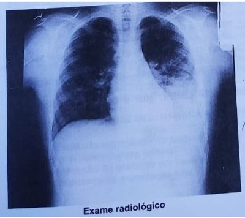
A Transfusão de concentrado de hemácias 10 ml/kg.
B Transfusão de troca (sangria + transfusão).
C Não há indicação de transfusão.
D Transfusão de concentrado de hemácias 6 ml/kg.
Questão 41 · Neutropenia f ebril · 4000112707Paciente com 3 anos de idade em tratamento de rabdomiossarcoma embrionário há 6 meses. Há 6 horas apresentou quadro de febre 38,5 ºC, um pico isolado, que cedeu com uso de dipirona. Sem outras queixas. Último ciclo de quimioterapia há 9 dias (vincristina, actinomicina e ciclofosfamida). Ao exame: BEG, descorado (+/++++), acianótico, anictérico, sem edemas, boa perfusão periférica. Boca e ouvido: s/alterações. AR: FR: 26 irpm. Murmúrio vesicular simétrico, sem ruídos adventícios. ACV: FC: 108 bpm. Bulhas rítmicas, normofonéticas, sem sopros. SGI: Abdome normotenso, sem visceromegalias. Ruídos hidroaéreos presentes e normoativos. Presença de hiperemia perineal. SN: sem sinais meníngeos. Solicitado hemograma, que evidenciou: Hb: 8,6 g/dl, GB: 1.200/mm³ (8% segmentados e 92% linfócitos), Plaquetas: 68.000/mm³. A conduta para o paciente acima é?
A Internação para investigação e iniciar fluconazol.
B Investigação ambulatorial e iniciar amoxacilina + clavulanato de potássio.
C Internação para investigação e iniciar cefepime e metronidazol.
D Investigação ambulatorial com reavaliações e iniciar pomada com nistatina e óxido de zinco.
Questão 42 · Perf il de f erro na anemia f erropriva · Diagnóstico dif erencial das anemias microcíticas · 4000112684Menina, 6 meses, está internada na enfermaria para tratamento de pneumonia, em uso de antibioticoterapia com ampicilina há 3 dias. Está afebril há 12 horas. Ao exame físico: bom estado geral, com palidez cutânea, sem desconforto respiratório, FR 30 ipm. Ausculta pulmonar: murmúrio vesicular diminuído em base a D. Ausculta cardíaca: 2 BRNF sem sopros, FC 150 bpm, pulsos cheios, perfusão 2 segundos. PA 90 x 50 mmHg. Abdome: fígado e baço não palpáveis, RH+. AP: fez o uso de leite materno exclusivo e atualmente está na introdução de papa de frutas e legumes. Hemograma: Hb 8 g/dl, Ht 25%, HCM 18 pg, VCM 50 FI, RDW 20%, GB 10000, neutró los 65% (predomínio de segmentados), linfócitos 30%, monócitos 2%, eosinófilos 3%. Plaquetas 300.000. Qual o melhor exame para elucidar o diagnóstico nesta situação?
A VHS.
B Ferritina.
C Saturação de transferrina.
D Reticulócitos.
Questão 43 · Cardiopediatria e Cardiopatias congênitas · 4000112666Uma criança de 6 meses de idade foi submetida a um cateterismo cardíaco, que evidenciou as seguintes saturações de oxigênio: Veia cava superior: 75%; Átrio direito: 75%; Ventrículo direito: 85%; Artéria pulmonar: 85%; Veias pulmonares: 95%; Átrio esquerdo: 95%; Ventrículo esquerdo: 95%; Artéria aorta: 95%. Baseado nestes dados, a criança provavelmente é portadora de
A defeito do septo atrioventricular.
B persistência do canal arterial.
C comunicação interventricular.
D comunicação interatrial.
Questão 44 · Cardiopediatria e Cardiopatias congênitas · 4000112640Você está examinando uma criança de 2 meses de vida com história de sudorese profusa, taquipneia e cansaço às mamadas, com intensi cação dos sintomas há 3 semanas. A saturação de oxigênio é de 95% em ar ambiente. A radiogra a de tórax evidencia cardiomegalia global, com aumento da trama vascular pulmonar, e o eletrocardiograma evidencia sobrecarga biventricular. Na ausculta, há a presença de sopro. Baseado nestes dados, qual a representação esquemática mais provável do sopro encontrado? S1- primeira bulha; S2 - segunda bulha.

A Figura 1.
B Figura 2.
C Figura 3.
D Figura 4.
Questão 45 · Diagnóstico · 4000112595Paciente masculino, 4 anos, portador da síndrome de Down, apresenta distensão abdominal observada há 2 anos. Na investigação, a antitransglutaminase IgA foi fortemente reagente. Qual é a conduta imediata mais correta?
A Pesquisa de HLA DR13 e DQ6.
B Endoscopia digestiva alta com biópsia de duodeno.
C Prescrever dieta de exclusão de glúten.
D Colonoscopia com biópsias seriadas.
Questão 46 · Síndrome HemolíticoUrêmica SHU · 4000112563Menina, 2 anos e 6 meses, com 13 kg, previamente saudável. Há 10 dias teve quadro de diarreia e vômitos com resolução espontânea dos vômitos em 48 horas, mas manutenção das fezes líquidas com presença de pequena quantidade de sangue escuro a partir do terceiro dia. Procurou atendimento médico sendo prescrita solução oral para hidratação e ceftriaxone IM, 1 vez ao dia, que a criança utilizou até ontem com resolução do quadro de diarreia no nal da primeira semana. Hoje a mãe notou a criança pálida, muito prostrada e sem urinar há 12 horas. Exame físico: criança irritada, chorando com lágrimas, edema bipalpebral. Ausculta pulmonar: MV presente e simétrico com roncos; FR 25 irpm; ausculta cardíaca: 2 BRNF sem sopros, FC 153 bpm; PA 112 x 50 mmHg. Abdome globoso sem alterações. Saturação de oxigênio em oximetria de pulso = 95%. Exames laboratoriais: hemoglobina = 6,5 g/dL, hematócrito = 20%, leucócitos = 14.000, plaquetas = 70.000, ureia = 66 g/dL, creatinina = 3,2 mg/dL, sódio sérico = 130 mEq/L e potássio sérico = 6,0 mEq/L. O comprometimento da função renal, nesse cenário diagnóstico, pode ser atribuído a:
A Necrose tubular aguda.
B Glomerulonefrite aguda pós infecciosa.
C Nefrite túbulo intersticial por droga.
D Microangiopatia trombótica.
Questão 47 · Pediatria · Quadro clínico · 4000112539Menina, branca, previamente hígida com 15 meses de idade atendida em Unidade Básica de Saúde há 3 semanas com a seguinte história: há um dia com quadro de irritabilidade, recusa alimentar, febre de 38 ºC que cedia com antitérmico, diminuição da diurese e urina mais escurecida. Exame físico: criança em bom estado geral, sem alterações, exceto obstrução nasal e presença de roncos de transmissão na ausculta pulmonar. Colhido exames e orientado retorno no dia seguinte, quando foi diagnosticada otite média serosa e foram prescritos soro siológico nasal e antitérmico. Devido a alterações encontradas nos exames laboratoriais do dia anterior, o médico orientou a mãe a repetir o exame de urina e procurar o pediatra que segue a puericultura da criança. Na consulta de rotina, a mãe relata que a febre durou apenas 3 dias. A criança está bem no momento e ela trouxe os exames realizados para avaliação. Exames iniciais (urina colhida por sondagem vesical transuretral). Urina tipo 1: densidade 1,021, pH 5, nitrito negativo, proteína 1+, leucócitos 4-5 por campo e hemácias 4-5 por campo. Urocultura: > 100.000 UFC/mL de E coli. Repetição dos exames (2 semanas após o quadro inicial). Urina tipo 1: densidade 1,013, pH 5, nitrito negativo, proteína negativa, leucócitos 1-2 por campo e hemácias 0-1 por campo. Urocultura: > 100000 UFC/mL de E coli. Qual o provável diagnóstico?
A Infecção do trato urinário inferior.
B Bacteriúria assintomática.
C Vulvovaginite.
D Malformação do trato urinário.
Questão 48 · Sindrome Klinef elter · Causas · 4000112517Adolescente do sexo masculino com 14 ano apresenta aumento do volume mamário bilateralmente. Refere que isso ocorreu há cerca de 2 anos junto com o desenvolvimento dos pelos e do pênis. Ao exame físico: altura 176 cm, M3 bilateral, P4, pênis com 6 cm de comprimento esticado e testículos com 3 mL de volume bilateralmente. Quais exames devem ser solicitados?
A Ultrassonografia da mama e cariótipo.
B Dosagem de LH, FSH e cariótipo.
C Dosagem de testosterona, estradiol e prolactina.
D Idade óssea e ultrassonografia testicular.
Questão 49 · Diagnóstico dif erencial Resistência aos hormônios tireoidianos · 4000112496Menina com 3 anos e 4 meses, é trazida à consulta pela mãe que refere agitação psicomotora e di culdade para dormir e ganhar peso desde os primeiros meses de vida. Nega outras queixas, doenças prévias e uso de medicações. DNPM adequado. Tem antecedentes de pai e avô paterno com bócio. Exame físico: peso = 10,9 kg. Estatura = 90 cm. FC = 140 bpm. Discreto bócio difuso, parenquimatoso, móvel e indolor. Sem outras alterações. Exames laboratoriais: T3 total = 210 ng/dL (VR: 84 a 172); T4 livre = 2,3 ng/dL (VR: 0,9 a 1,8); TSH = 8,2 mIU/L (VR: 0,4 a 4,5); anticorpo anti-TPO = 34 IU/L (VR: menor que 35). Qual é a hipótese diagnóstica mais provável?
A Tireoidite de Hashimoto.
B Hipotireoidismo.
C Resistência aos hormônios tireoidianos.
D Doença de Graves.
Questão 50 · Calendários vacinais · ImunizaçõesVacinação · 4000112474Paciente de 2 meses de vida, apresenta diagnóstico confirmado de imunode ciência combinada grave. Encontra-se em boas condições clínicas e com evolução pondero- estatural adequada. É levado ao posto de saúde para iniciar vacinação. A conduta adequada é
A fazer todas as vacinas, exceto BCG.
B fazer somente vacinas atenuadas.
C fazer todas as vacinas indicadas para a idade.
D fazer somente vacinas inativadas.
Questão 51 · Pediatria · Diagnóstico · 4000112437Escolar de 8 anos, previamente hígido, há 4 dias apresenta febre 38,5 °C, uma vez ao dia, associado à dor e inchaço nos tornozelos e joelho esquerdo. Após dois dias houve melhora dos sintomas nessas articulações, porém, iniciou com dor no punho direito. Ao procurar o pronto socorro, apresentava-se em REG, hipoativo, corado, hidratado, afebril, frequência cardíaca de 132 bpm, frequência respiratória de 28 ipm, com edema em joelho esquerdo e dor e limitação no punho direito. A velocidade de hemossedimentação era de 80 mm na primeira hora e o hemograma e o raio-X das articulações acometidas não apresentam alterações. Qual a abordagem diagnóstica inicial seria adequada para esse paciente?
A Aspirado de medula óssea e LDH.
B Artrocentese do joelho esquerdo e hemocultura.
C Anticorpo antinúcleo e urina rotina.
D Antiestreptolisina O e ecocardiograma.
Questão 52 · Manif estações clínicas · 4000112408Menino, 3 anos, proveniente da zona urbana. Há 2 meses apresentando lesões em membros inferiores, inicialmente eram pruriginosas e eritematosas e ao passar do tempo, aumentaram e caram ulceradas como demostrada na foto. Nega perda de apetite, perda de peso ou febre durante o período. Em sua cidade, algumas crianças tiveram as mesmas lesões. Qual o agente etiológico provável?
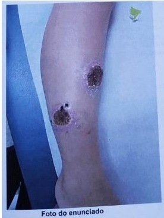
A Fusarium oxyspora.
B Paracoccidoides brasiliensis.
C Leishmania braziliensis.
D Bacilo de Koch.
Questão 53 · Modos convencionais de Ventilação Mecânica · 4000112371Você decide pela intubação traqueal de um paciente de 1 ano, que está em insu ciência respiratória devido laringite. Após intubação, há melhora imediata do desconforto respiratório. Qual é a con guração inicial adequada do ventilador mecânico em modo SIMV (ventilação mandatória intermitente sincronizada), controlado a pressão de suporte?
A Fração inspirada de oxigênio 21%, pressão inspiratória 25 cmH₂O (ajustada para volume corrente exalado de 12ml/kg), frquência respiratória 15/min, tempo inspiratório 0,8 s (relação I/E 1:4), PEEP 10 cmH₂O, pressão de suporte 15 cmH₂O acima da PEEP, sensibilidade -2 cmH₂O.
B Fração inspirada de oxigênio 100%, pressão inspiratória 15 cmH₂O (ajustada para volume corrente exalado de 8 ml/kg), frequência respiratória 25/min, tempo inspiratório 0,6 s (relação I/E 1:3), pressão positiva no final da inspiração (PEEP) 5 cmH₂O, pressão de suporte 10 cmH₂O acima da PEEp, sensibilidade -1 cmH₂O.
C Fração inspirada de oxigênio 100%, pressão inspiratória 15 cmH₂O (ajustada para volume corrente exalado de 4 ml/kg), frequência respiratória 40/min, tempo inspiratório 0,6 s (relação I/E 1:2), PEEP 5 cmH₂O, pressão de suporte 10 cmH₂O acima da PEEP, sensibilidade -2 cmH₂O.
D Fração inspirada de oxigênio 21%, pressão inspiratória 25 cmH₂O (ajustada para volume corrente exalado de 12ml/kg), frequência respiratória 20/min, tempo inspiratório 1 s (relação I/E 1:2), PEEP 5 cmH₂O, pressão de suporte 20 cmH₂O acima da PEEP, sensibilidade -1 cmH₂O.
Questão 54 · Manif estações clínicas · 4000112346Menino, 5 anos, procedente da zona rural chega na emergência com história de picada por animal não identi cado. Logo em seguida apresentou vômitos, sudorese e sonolência. Ao exame físico: MEG, descorado, acianótico, hidratado. Olhos: ptose palpebral. Boca: seca. Ausculta cardíaca e pulmonar sem alterações, FR 30 ipm, FC 130 bpm, pulsos cheios. Tempo de enchimento capilar 2 segundos. PA: 100 x 60 mmHg. Abdome: plano, normotenso, indolor, fígado e baço não palpáveis. SN hipotonia de musculatura e midríase. Diante deste quadro clínico qual o soro antiveneno você optaria?
A Soro antibotrópico.
B Soro antiloxosceles.
C Soro anticrotálico.
D Soro antiescorpiônico.
Revisar: possível letra faltando em enunciado
Questão 55 · Quadro clínico · 4000112324Menino, 4 anos, previamente hígido, está no 3° dia de pós-operatório de uma correção de fratura supracondiliana em braço direito. A cirurgia foi sem intercorrência, mas ele não aceitou bem a dieta e está em jejum há 48 horas. Está com soro de manutenção com 100% Holliday, Na: 30 mEq/L, K: 30 mEq/L, Mg: 0,5 mEq/Kg/dia, gluconato de cálcio 10%: 2 ml/kg/dia e glicose: 2 gramas/kg/dia. Hoje apresentou crise convulsiva, inédita, tônico clônica generalizada com duração de 5 minutos. Qual é o provável diagnóstico?
A Hiponatremia.
B Hipopotassemia.
C Hipomagnesemia.
D Hipocalcemia.
Questão 56 · Doença de Hirschsprung · 4000112298Pré-escolar com 4 anos, apresenta di culdade para evacuar desde os primeiros meses de vida, havendo piora progressiva do quadro há um ano quando passou a frequentar a creche. Atualmente só evacua com lavagem intestinal, que é realizada quando a criança ca 1 semana sem evacuar e tem muita dor abdominal, resultando em saída de fezes empedradas em grande quantidade. É uma criança retraída, não gosta de ir à escola, prefere car com a mãe. Já realizou diversos tratamentos, incluindo laxativos, aumento de bras na dieta, sem sucesso. Ao exame, apresenta discreta distensão abdominal, fezes endurecidas palpáveis em hipogástrio, peso e estatura no percentil 25. Com base nesse caso clínico, qual o melhor exame para firmar o diagnóstico?
A Enema contrastado.
B Trânsito intestinal.
C Colonoscopia com biópsia.
D Exame de bioimpedância.
Revisar: possível letra faltando em enunciado
Questão 57 · Diagnóstico · 4000112277Menino de 15 dias, com história de diminuição da movimentação do membro superior direito e irritabilidade há uma semana. O exame físico mostra, adicionalmente, icterícia, discreto rash maculopapular, petéquias isoladas e hepatoesplenomegalia. O menino nasceu de parto cesárea a termo, apresentação pélvica, com 3000 g, Apgar 9/10 e recebeu alta hospitalar no terceiro dia de vida. A mãe relata acompanhamento de pré- natal, mas não trouxe cartão. Qual é o mais provável agente infeccioso causador do quadro?
A Treponema pallidum.
B Citomegalovírus.
C Toxoplasma gondii.
D Vírus da rubéola.
Questão 58 · Ventilação com pressão positiva · 4000112258Durante o atendimento em sala de parto a um recém-nascido a termo, parto vaginal, com líquido amniótico meconiado, espesso, você nota que o bebê está cianótico, ácido e não apresenta movimentos torácicos. Você o leva imediatamente à mesa de reanimação sob fonte de calor radiante e realiza os passos iniciais do cuidado ao recém-nascido, sem melhora. A frequência cardíaca é < 60 bpm. Qual é a conduta imediata mais indicada neste momento?
A Iniciar ventilação com pressão positiva com máscara.
B Realizar intubação traqueal.
C Realizar aspiração traqueal sob visualização.
D Iniciar massagem cardíaca.
Questão 59 · Def inição e classif icação · 4000112228Menino, 8 anos, comparece ao consultório do seu pediatra para uma avaliação de rotina. Última consulta médica há 2 anos atrás. Mãe refere que a criança está bem, não teve nenhum problema nesse período. Pediatra observa nas suas anotações que a criança nasceu a termo, não teve intercorrências neonatais e o desenvolvimento neuropsicomotor foi adequado. Nos antecedentes mórbidos, apenas algumas viroses de vias aéreas superiores e um tratamento com antibiótico devido quadro de amidalite aguda. Exame físico: peso no percentil 50 para idade e sexo, estatura 130 cm, PA 112 x 72 mmHg. Observação: a medida de PA foi feita no braço direito por método auscultatório, em condições adequadas. Foram feitas 3 medidas com intervalo de 3 minutos. Desprezada a primeira medida e feito a média das 2 últimas aferições. Utilizando a tabela acima, como é classificada a medida desse PA?

A Hipertensão arterial estágio II.
B Pressão arterial elevada.
C Hipertensão arterial estágio I.
D Dentro da normalidade.
Questão 60 · Características Gerais · 4000112190Mulher de 40 anos, com massa pétrea cervical de nível V direito com 3 cm de diâmetro. Nega disfonia, dispneia, odinofagia e disfagia. Apresenta exame físico de cabeça e pescoço sem outras alterações senão a massa e naso broscopia exível normal. Qual o próximo passo decisivo na investigação?
A Punção aspirativa com agulha fina da massa.
B Ressonância magnética.
C Broncoscopia.
D Mediastinoscopia com biópsia.
Questão 61 · Complicações PósOperatórias · 4000112170Recém-nascido de 2500 g está com obstrução intestinal e foi indicada cirurgia. Durante a cirurgia a temperatura do paciente manteve-se entre 35,5 °C e 36°C, com duração total de tempo anestésico de 3 horas e 40 minutos. Ao término da cirurgia o bebê estava completamente molhado. No retorno à Unidade de Terapia Intensiva neonatal a temperatura foi 35,8 °C. Tendo em vista a evolução da temperatura em todo o ato operatório, qual o risco de complicação metabólica esperado em pós-operatório imediato?
A Acidose respiratória.
B Alcalose metabólica.
C Acidose metabólica.
D Alcalose respiratória.
Questão 62 · Tratamento · História Clínica · Cirurgia · 4000112124Homem, 18 anos, procura atendimento médico por dor pleurítica súbita à direita e dispneia aos moderados/grandes esforços. Não há antecedentes pessoais de comorbidades e não é tabagista. Ao exame físico, saturação 92% em ar ambiente, afebril, FC = 90 bpm e PA = 118 x 82 mmHg. Hipertimpanismo à percursão e ausência de murmúrio vesicular à direita. Uma radiografia de tórax é solicitada (figura). Qual o diagnóstico e conduta adequados?
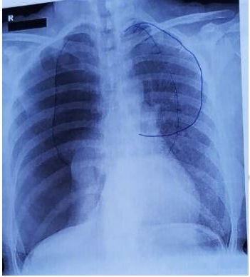
A Colapso pulmonar completo por pneumotórax extenso e com quadro descrito há o diagnóstico de pneumotórax hipertensivo. Indicação de toracocentese descompressiva seguida de drenagem pleural.
B Pneumotórax completo à direita indica drenagem pleural tubular, seguida de investigação com tomografia de tórax.
C Atelectasia completa do pulmão direito levando a pneumotórax extenso, inicialmente indicaria broncofibroscopia para excluir causa endobrônquica.
D Pneumotórax importante, porém, em paciente sem insuficiência respiratória, indicaria drenagem pleural aberta e investigação com ressonância magnética.
Questão 63 · Inf ecções Necrotizantes · Cirurgia · 4000112055Homem, 62 anos, diabético e hipertenso não controlado, sofreu trauma na região perineal (quando caiu sentado) há cerca de 5 dias. No dia seguinte, passou a apresentar abaulamento na região perianal, acompanhado de hiperemia e saída de secreção amarelada. Relata também que passou a apresentar edema da bolsa escrotal, descamação e enegrecimento em alguns pontos da pele há 3 dias, além de odor fétido no local. Há 2 dias está apresentando febre. Ao exame físico da bolsa escrotal observa-se os achados conforme figura. Qual a principal hipótese diagnóstica?

A Fratura peniana.
B Hematoma pós-trauma.
C Trombose venosa profunda de vasos pélvicos.
D Gangrena de Fournier.
Questão 64 · Doença de Hirschsprung · Doença de Hirschsprung · 4000112008Menina, 3 anos. Informante refere constipação intestinal desde o período neonatal evacuando apenas com medidas (estímulo com supositórios). Evoluiu, quando lactente, com episódios de impactação de fezes com necessidades de lavagem intestinal. Condição atual: evacua apenas com lavagem intestinal e apresenta escape fecal. Refere 4 internações com ""diarreia"", segundo mãe. A foto ilustra o paciente durante o momento de sua avaliação. Considerando o diagnóstico mais provável, qual a causa possível para estes episódios de ""diarreia""?

A Rotavírus.
B Alergia alimentar.
C Enterocolite.
D Reação as lavagens.
Questão 65 · Abdome Agudo Perf urativo · Cirurgia · 4000111961Homem, 68 anos, com dor abdominal intensa no epigástro, iniciada subitamente há 2 horas. Refere náuseas, mas nega vômitos ou qualquer outro sintoma. Refere hipertensão arterial sistêmica com bom controle medicamentosa, além de cervicalgia crônica devido à hérnia discal, com necessidade de uso frequente de medicação para dor. Ao exame físico: bom estado geral, frequência cardíaca de 60 bpm, pressão arterial de 160 x 110 mmHg, abdome difusamente doloroso à palpação e tenso. Solicitados exames laboratoriais e radiogra a de abdome e tórax (vide guras). Qual a principal hipótese diagnóstica?
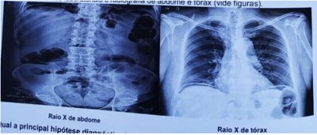
A Úlcera gástrica perfurada.
B Isquemia mesentérica.
C Neoplasia de cólon com obstrução intestinal.
D Dissecção aguda de aorta.
Questão 66 · Tratamento · 4000111872Homem de 56 anos apresenta desconforto na região precordial e hemitórax esquerdo uma semana após ser submetido a operação para revascularização do miocárdio, sem outras queixas. Ao exame físico apresenta pressão arterial 140 x 95 mmHg e bulhas hipofonéticas, frequência cardíaca de 100 bpm e temperatura de 37,7 °C. O ecocardiograma revelou dissinergia septal, derrame pericárdico leve, sem sinais de tamponamento, e fração de ejeção de 55%. A figura abaixo mostra o eletrocardiograma deste paciente. Qual a conduta mais adequada?
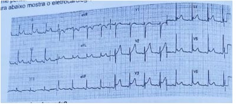
A Heparinização plena.
B Betabloqueador e nitrato.
C Anti-inflamatório não-esteroidal.
D Dupla antiagregação plaquetária.
Questão 67 · Tórax Instável e Contusão Pulmonar · 4000111824Homem, 66 anos, anticoagulado, vítima de colisão de carro x poste é transferido para um Centro de Trauma após 12 horas de observação em Unidade de Pronto Atendimento, com dor em hemitórax direito. Exame físico: consciente, saturação de 94%, FR = 22 ipm, murmúrio vesicular diminuído à direita, FC = 74 bpm, PA = 100 x 70 mmHg. Devido ao mecanismo de trauma, realizou tomogra a de tórax que mostrou fratura única de 4°, 5° e 6° arcos costais à direita, com fraturas alinhadas e sem hemotórax ou pneumotórax. Realizou espirometria com capacidade vital forçada < 1000 ml. Com a analgesia endovenosa, teve bom controle da dor. Qual a conduta?
A Alta hospitalar com analgesia e consulta de retorno com pneumologista.
B Alta hospitalar com analgesia e orientação de retorno se dispneia.
C Internar doente para cirurgia de fixação de arcos costais fraturados.
D Internar doente em leito de terapia intensiva com monitorização e analgesia.
Questão 68 · Manif estações Clínicas · Medidas Iniciais · Cirurgia · 4000111797Homem, 78 anos, com queixa de dor à deambulação bilateral, porém mais intensa em membro inferior esquerdo há 20 anos. Há 4 horas apresentou dor súbita em pé direito, frialdade e parestesia. É portador de hipertensão arterial sistêmica e tabagismo ativo. Ao exame físico: bom estado geral, corado e hidratado. Ritmo cardíaco regular, sem sopros, PA: 180 x 100 mmHg e frequência cardíaca de 67 bpm. Exame físico vascular: presença de pulsos femorais bilaterais, porém ausência de pulsos poplíteos ou mais distais bilateralmente. O pé direito está frio, com perda sensitiva, porém sem fraqueza muscular e sinal doppler arterial ausente neste pé. Apresenta ainda cianose não xa de pododáctilos em pé direito. Não há lesões tróficas. Qual o diagnóstico e a melhor conduta?
A Obstrução arterial crônica agudizada. Deve-se iniciar anticoagulação e, se não houver melhora em 24 horas, está indicada exploração arterial.
B Obstrução arterial crônica com isquemia crítica. Paciente deve ser internado e solicitado inicialmente um ultrassom arterial que auxiliará na estratégia cirúrgica.
C Obstrução arterial aguda de provável origem trombótica em paciente com doença arterial crônica subjacente. Deve ser iniciado antiagregação e anticoagulação imediatas e realizado um exame de imagem inicialmente.
D Doença arterial obstrutiva periférica com claudicação limitante e embolia aguda sobrejacente em membro mais sadio. Está indicado trombólise e exploração cirúrgica para realização de tromboembolectomia à Fogarty.
Questão 69 · Conduta nos Aneurismas de Aorta Abdominal · Conf irmação Diagnóstica · Cirurgia · 4000111617Homem, 80 anos, assintomático, com achado em ultrassom de rotina de aneurisma de aorta abdominal infra-renal de 4,2 x 4,1 cm de diâmetros e 9,0 cm de extensão. Realizou então angiotomogra a que confirmou achados do ultrassom mostrando ainda colo de 2,0 cm de extensão, lumem de 2,5 cm de diâmetro e saco aneurismático com trombos até próximo a bifurcação das ilíacas. Qual a conduta atual mais adequada para este caso?
A Tratamento endovascular minimamente invasivo.
B Cirurgia aberta convencional.
C Seguimento com exames de imagem a cada 6 meses.
D Cirurgia robótica transperitoneal.
Questão 70 · Biópsia · Escore de Sintomas IPSS · Cirurgia · 4000111594Homem negro de 54 anos procurou atendimento para rastreamento e detecção precoce do câncer de próstata, concordando com avaliação após exposição dos seus riscos e benefícios. Apresenta sintomas do trato urinário inferior com International Prostate Symptoms Score (I-PSS) de 7/35, satisfeito com sua qualidade de vida. Relata antecedente de neoplasia de próstata na família. Exame digital demonstrou próstata com 40 cm³ e consistência broelástica, sem nódulos, indolor. Foram solicitados exames, reproduzidos abaixo. Qual a conduta mais apropriada?
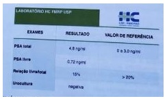
A Fluxometria e ultrassom transretal de próstata.
B Biópsia de próstata.
C Retorno em 6 meses com novo PSA total e livre.
D Alfa-bloqueador associado a inibidor da 5alfa-redutase.
Questão 71 · Quadro clínico diagnóstico e sinais de alarme · 4000111357Mulher de 35 anos com quadro de dor lombar esquerda aos esforços e com irradiação para a região glútea e membro inferior esquerdo há 5 dias. Nega antecedente pessoal de litíase urinária e refere história familiar (irmão do avô paterno). Refere parestesia intermitente. Procurou UPA onde solicitaram exame de urina e ultrassom. O exame de urina evidenciou densidade de 1030, pH de 8,0, leucócitos de 5 por campo, hemácias de 5 por campo e presença de cristais. Ultrassom evidenciou imagem de 0,3 cm no cálice inferior, sem sombra acústica posterior, interrogando cálculo urinário e ausência de dilatação no trato urinário. Após prescrever analgesia adequada, qual a melhor conduta?
A Referenciar para ortopedia para tratamento da lombalgia.
B Referenciar para urologia para tratamento da litíase.
C Regulação para realização de ressonância nuclear magnética.
D Regulação para internação hospitalar para realização de litotripsia.
Questão 72 · Tratamento e conduta · 4000111324Mulher, 43 anos, com diagnóstico de melanoma nodular em antebraço esquerdo, Breslow de 2,1 mm. Foi submetida à cirurgia de ampliação de margens seguida de pesquisa do linfonodo sentinela em axila esquerda, cujo resultado histopatológico foi positivo para presença de melanoma. Foi então indicado cirurgia para linfadenectomia axilar esquerda, que demonstrou acometimento de 2 linfonodos dos 9 encontrados. Como deverá prosseguir o tratamento dessa paciente?
A Seguimento clínico com exames de imagem.
B Linfadenectomia axilar direita.
C Radioterapia em axila esquerda.
D Quimioterapia com dacarbazina.
Questão 73 · Úlcera diabética · Debridamento · Classif icação do risco de ulceração e seguimento · 4000111289Mulher, 57 anos, hipertensa, diabética e portadora de varizes de membros inferiores. Notou surgimento de ferida em região de tornozelo esquerdo há 9 meses. A ferida aumentou progressivamente de tamanho, com presença de tecido desvitalizado no leito, muita exsudação e sem exposição óssea. Há 4 meses foi submetida a desbridamento e 3 ciclos de terapia por pressão negativa até obtenção de tecido de granulação exuberante, seguida de cobertura cutânea com enxerto de pele parcial. Houve integração adequada do enxerto e a ferida fechou por completo. Há 1 mês, paciente notou surgimento de nova ferida na mesma localização, que aumentou de tamanho e com perda de todo enxerto de pele. Não apresentava sinais de infecção local. Qual das causas melhor explica a recidiva da ferida?
A Localização da ferida no tornozelo.
B Cobertura cutânea da ferida inadequada para o local.
C Preparo inadequado do leito da ferida.
D Falta de controle das comorbidades causadoras da ferida.
Questão 74 · Abdome Agudo Obstrutivo · Cirurgia · 4000111246Mulher, 40 anos, internada em uma Unidade de Terapia Intensiva após queimadura de 3° grau de 40% da superfície corporal. Antecedentes pessoais: previamente hígida. Apresenta distensão abdominal importante e parada de eliminação de fezes. Ao exame: intubada, hipocorada e afebril. FC = 88 bpm. PA: 110 x 70 mmHg, sem drogas vasoativas. Abdome tenso e com distensão importante. Toque retal com fezes sólidas. Hemograma, lactato, função renal e eletrólitos normais. Radiogra a de abdome apresenta colograma aéreo difuso e importante (vide figura). Tomogra a do abdome sem ponto de obstrução. Qual a melhor hipótese e conduta?
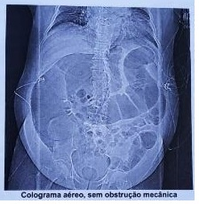
A Isquemia mesentérica; arteriografia de urgência.
B Megacólon tóxico; colectomia de urgência.
C Pseudo-obstrução colônica; sondagem descompressiva.
D Volvo do sigmoide; descompressão endoscópica.
Questão 75 · Apresentação Clínica e Diagnóstico · Tratamento · Cirurgia · 4000111171Mulher, 30 anos, há 2 dias com dor anal importante, após evacuação com esforço e fezes endurecidas. Refere eliminação de sangue vivo pelo ânus, que pinga no vaso sanitário após a passagem das fezes. Como antecedentes, informou que o hábito intestinal era a cada 2 dias, com fezes macias e que, na última semana, após viagem a trabalho, modi cou sua rotina alimentar. Nega câncer na família. Mãe foi operada de hemorroidas. Ao exame físico da região anal, observou-se o achado da figura. Qual a melhor conduta?
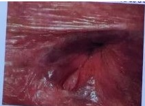
A Diltiazem tópico.
B Nifedipina tópica.
C Colonoscopia.
D Orientação higienodietética.
Questão 76 · Classif icação de Forrest · Diagnóstico e Tratamento · 4000111106Homem, 42 anos, em tratamento de tendinite do calcâneo foi admitido em Unidade de Pronto Atendimento com melena há dois dias, frequência cardíaca de 92 batimentos por minuto, pressão arterial de 110 x 70 mmHg, hemoglobina de 12 g%. Após as medidas iniciais foi encaminhado para hospital de média complexidade para realização de endoscopia digestiva alta que revelou úlcera péptica coberta por fibrina (vide figura). Qual é a melhor orientação?
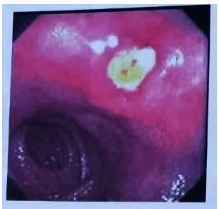
A Hemostasia endoscópica, dieta líquida sem resíduos, tratamento com inibidor de bomba de prótons e observação em leito de enfermaria por 12 horas para monitorar ressangramento.
B Iniciar dieta, alta hospitalar e tratamento com inibidor de bomba de prótons e para Helicobacter pylori.
C Hemostasia endoscópica, jejum, inibidor de bomba de prótons e observação em leito de estabilização clínica e repetir a endoscopia em 24 horas para comprovar a hemostasia.
D Jejum, inibidor de bomba de prótons em dose dobrada, observação em leito de enfermaria até completar 72 horas sem sinais hemodinâmicos e de exteriorização de sangramento.
Questão 77 · Síndrome Dispéptica · 4000111063Mulher, 58 anos, sem comorbidades, foi encaminhada para ambulatório médico especializado por apresentar, esporadicamente, há dois anos, após aposentadoria, quatro episódios de dor em queimação epigástrica e retroesternal desencadeada pela ingesta concomitante de macarronada vermelha e vinho durante as viagens de férias. Anteriormente havia sido avaliada na atenção básica em função dos sintomas e do ganho de peso, onde os exames laboratoriais solicitados estavam dentro da normalidade. A ultrassonogra a de abdômen (vide figura) identi cou litíase biliar. Qual o plano terapêutico mais apropriado neste momento?

A Inibidor da bomba de prótons, endoscopia, seguida de colecistectomia.
B Orientação comportamental e acompanhamento na atenção básica.
C Endoscopia, inibidor da bomba de prótons e fundoplicatura.
D Endoscopia, colecistectomia e fundoplicatura de oportunidade.
Questão 78 · Complicações · Cirurgia · 4000111008Homem, 53 anos de idade, apresentou episódio de pancreatite aguda com aumento progressivo do abdome e no oitavo dia de internação evoluiu com desconforto respiratório, hipotensão, oligúria e a pressão intra-abdominal atingiu 23 mmHg, com adoção de suporte cardiovascular, respiratório e renal. Com base nas alterações siológicas, nos achados físicos e de imagem (vide figura), qual o procedimento mais efetivo para melhorar as alterações observadas?
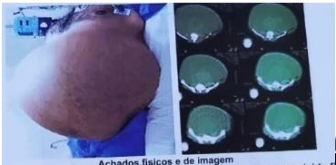
A Drenagem percutânea.
B Sondagem gástrica e retal.
C Laparotomia com peritoneostomia.
D Drenagem endoscópica.
Questão 79 · Avaliação PréOperatória · Manif estações Clínicas · Diagnóstico · 4000110960Homem, 38 anos, previamente hígido, com icterícia indolor, prurido, colúria e acolia fecal há 3 semanas. No período, perdeu cerca de 6% da massa corporal. Exame físico: icterícia de ++++/4, e sinais de escoriação. Risco anestésico- cirúrgico classificado de acordo com a Sociedade Americana de Anestesiologia como ASA I. A colangiopancreatografía por ressonância magnética (vide figura) revelou lesão sólida na con uência biliopancreática de 1,4 centímetros e está em programação de ressecção duodenopancreática. Dentre os exames solicitados no pré-operatório desta cirurgia, considera- se essencial:
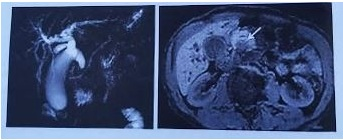
A Avaliação da coagulação.
B Dosagem de aminotransferases e bilirrubinas.
C Biópsia por ecoendoscopia.
D Eletrocardiograma e radiografia de tórax.
Questão 80 · Exames complementares · Cardiologia · 4000110920Você é médico(a) de família e comunidade em uma Unidade de Saúde da Família e seu primeiro paciente do dia é um homem. Ele vem sem queixas para uma consulta de rotina agendada previamente. Ele tem 56 anos, é hipertenso (de longa data) controlado e dislipidêmico. Faz uso de enalapril 20 mg/dia, ácido acetilsalicílico (AAS) 100 mg/dia e sinvastatina 20 mg/dia. Nunca fumou, nem bebeu. Apresenta exame físico normal. PA: 128 x 86 mmHg. Você checa o prontuário e encontra os seguintes exames complementares: glicose 94 mg/dL, colesterol total 185 mg/dL, colesterol HDL 61 mg/dL, triglicérides 132 mg/dL, creatinina 1,2 mg/dL, potássio 4,3 mEq/L. Dentre as opções abaixo, assinale aquela que cita exames obrigatórios e que estão faltando no prontuário do paciente citado.
A Ureia e TSH.
B Colesterol LDL e TSH.
C Colesterol LDL e sódio.
D Ácido úrico e urina rotina.
Questão 81 · Prevenção Quaternária · 4000110895Um adolescente de 17 anos procura a Unidade de Saúde da Família buscando um atestado de saúde para realização de prática esportiva. Com nalidade de identi car condições que poderiam levar à morte súbita durante a prática esportiva, a avaliação médica deve incluir a obtenção de uma história pessoal e familiar para a ocorrência de cardiopatias e um exame físico detalhado, com ênfase na identi cação de sopros e outras alterações cardíacas. Em relação a realização de exames subsidiários:
A Deve ser solicitado um teste de esforço.
B Deve ser solicitado um ecocardiograma.
C Não devem ser solicitados exames subsidiários.
D Deve ser solicitado um eletrocardiograma de 12 derivações.
Questão 82 · Valor Preditivo Negativo · 4000110865O gráfico abaixo foi extraído de um estudo em que os autores avaliaram um novo teste de biologia molecular que detecta mutações genéticas no M. tuberculosis potencialmente associadas ao fenótipo de resistência aos tuberculostáticos. Posteriormente, os autores zeram uma simulação, abaixo ilustrada, para estimar a performance do teste em locais com diferentes prevalências de resistência. O gráfico ilustra um importante conceito em epidemiologia que é
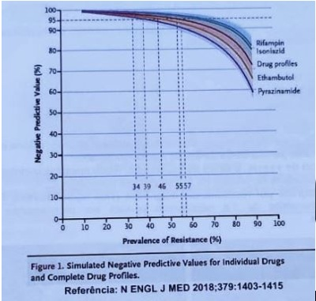
A o valor preditivo negativo de um teste se correlaciona de maneira inversa com o valor preditivo positivo do mesmo teste, na população estudada.
B o valor preditivo negativo de um teste se correlaciona de maneira direta com a prevalência da doença na população estudada.
C o valor preditivo negativo de um teste se correlaciona com a especificidade do teste, na população estudada.
D o valor preditivo negativo de um teste se correlaciona de maneira inversa com a prevalência da doença na população estudada.
Questão 83 · Princípios e Diretrizes do Sistema Único de Saúde SUS · 4000110833Os agentes comunitários de saúde nalizaram o cadastro da população da área de abrangência da Unidade de Saúde da Família (USF) e identi caram que 33% tinha plano de saúde suplementar. Na reunião de equipe discutiram essa característica do território e decidiram planejar as ações de saúde da USF para atender a população que possuía apenas a cobertura do Sistema Único de Saúde (SUS). Esta decisão da equipe de saúde pode ferir, principalmente, que princípio doutrinário do SUS?
A Resolutividade.
B Universalidade.
C Equidade.
D Integralidade.
Questão 84 · Manejo da Nef ropatia diabética · 4000110810Você atua como médico de família e comunidade em uma Unidade de Saúde da Família e atende uma paciente do sexo masculino, de cor branca, com 62 anos de idade e história de hipertensão arterial sistêmica e diabetes mellitus tipo 2, que vem para uma consulta de rotina e não apresenta queixas. Ele usa enalapril 20 mg/dia, anlodipino 5 mg/dia, metformina XR 500 mg/dia. No exame físico, você identi ca paciente em bom estado geral, pesando 72 Kg, FC = 80 bpm, PA = 126 x 80 mmHg. Ele lhe traz os resultados de exames laboratoriais que você pediu na última consulta. Glicemia de jejum: 110 mg/dL, HbA1C: 7%, creatinina: 2,0 mg/dL, sódio: 137 mEq/L, potássio: 4,2 mEq/L, relação albuminúria/creatinúria: 350 mg/g. Nessa situação, além de orientar alimentação adequada e exercícios físicos regulares, qual seria a sua conduta?
A Suspender o anlodipino e elevar a dose do enalapril para 20 mg de 12/12h.
B Manter as medicações prescritas nas mesmas doses, repetir os exames e reavaliar em 1 mês.
C Substituir a metformina por glibenclamida e manter as demais medicações prescritas.
D Suspender o enalapril e elevar a dose do anlodipino para 5 mg de 12/12h.
Revisar: possível letra faltando em enunciado
Questão 85 · Violência · 4000110687Você é médico em uma Unidade de Saúde da Família (USF) e durante a reunião para discutir o seguimento das famílias uma ACS informa que está preocupada, pois tem di culdades para acessar os membros que moram em um domicílio, uma vez que só é recebida no portão e a família mostra-se muito fechada. Nos contatos que a equipe teve com os membros da família, percebeu uma dinâmica familiar con ituosa, clima hostil e pouca adesão às orientações feitas pela equipe: Você então realiza uma visita domiciliar e é recebida pela mulher, que não se mostra confortável com a sua presença, diz que quando precisar buscará a USF e pede para que você seja breve na sua visita. Você então suspeita de violência doméstica e convida a paciente a buscar a USF, caso necessite. Diante do quadro você deverá
A notificar a suspeita de violência doméstica na ficha de Notificação Individual de Violência Interpessoal e Autoprovocada.
B comunicar o caso à Delegacia de Defesa da Mulher da cidade ou região, com intuito de proteger a mulher de uma possível agressão física.
C influenciar a mulher na tomada de decisões, uma vez que ela está em situação de alta vulnerabilidade e apresenta- se pouco reativa.
D convocar a família para realizar uma entrevista familiar, uma vez que é papel do Médico de Família e Comunidade tratar todos os membros da família.
Questão 86 · Avaliação em Saúde · 4000110666Em sua reunião com a equipe técnica o Secretário Municipal da Saúde demonstrou preocupação, pois ao analisar os indicadores hospitalares, notou o aumento de internações por diabetes, no município. Na discussão sobre as prováveis causas deste evento, a equipe justi cou que a atenção primária em saúde (APS) não está bem organizada, há falta de pro ssionais e pouca resolutividade, tendo em vista que a taxa de encaminhamentos das unidades de APS está acima de 25%. Diante dessa explicação, o secretário solicitou à equipe a elaboração emergencial de uma proposta de reorganização da APS para tentar intervir nesse problema de saúde. Na situação acima podemos a rmar que o secretário usou um indicador de condições sensíveis à APS para medir
A efetividade.
B produtividade.
C eficiência.
D eficácia.
Questão 87 · Política Nacional de Atenção Básica PNAB · 4000110646O cuidado domiciliar amplia o espectro da atenção das equipes que cuidam dos pacientes no domicílio, incorporando aspectos de prevenção, promoção e reabilitação. Segundo a Portaria 2.527, que rede ne a Atenção Domiciliar no âmbito do Sistema Único de Saúde, pode se afirmar que:
A as modalidades A2 e A3 exigem maior complexidade tecnológica e deverão ficar sob responsabilidade do Serviço de Assistência Domiciliar (SAD), nos municípios com menos de 40 mil habitantes.
B deve ser estruturada na perspectiva das Redes de Atenção à Saúde, tendo a atenção hospitalar como ordenadora do cuidado.
C é uma modalidade de atenção à saúde que substitui e complementa o cuidado prestado em outro ponto da Rede de Atenção á Saúde.
D o Serviço de Assistência Domiciliar (SAD) deverá estar integrado ao Sistema de Regulação Médica, sem ser referência para a Rede de Atenção às Urgências.
Questão 88 · Financiamento na Lei complementar n 1412012 · 4000110622A Lei Complementar 141/2012 definiu os percentuais mínimos de aplicação da receita própria dos entes federados (município, estado e união), no Sistema Único de Saúde (SUS). Essa vinculação das receitas das três esferas de governo para os gastos em ações e serviços de saúde foi importante, porque comprometeu a participação tripartite, no nanciamento da política pública de saúde. A análise das três situações hipotéticas apresentada no gráfico 1 permite afirmar que

A na situação C os entes federados aplicaram o exigido pela legislação.
B na situação B o estado não aplicou o exigido pela legislação.
C nas três situações os estados aplicaram o exigido pela legislação.
D nas situações A e C os municípios não aplicaram o exigido pela legislação.
Questão 89 · Atributos gerais da Atenção Primária à Saúde APS · 4000110514O médico de família e comunidade comentou com a sua equipe que, nos últimos 10 anos ele vem trabalhando com o crescimento e com as mudanças que ocorreram na vida da população adscritiva à sua Unidade de Saúde da Família (USF). Referiu ainda que ao andar pelo território da USF é abordado por vários membros da comunidade que querem discutir com eles as suas condições de saúde. o atributo-chave da APS relacionado ao relato do médico de família e comunidade é
A longitudinalidade.
B integralidade.
C competência cultural.
D coordenação.
Questão 90 · Política Nacional de Atenção Básica PNAB · 4000110481Você é médico(a) de família e comunidade e faz parte de uma equipe da Estratégia Saúde da Família. Semanalmente, um psiquiatra vêm até sua unidade para discutir casos complexos e realizar ações de educação permanente em saúde mental. Eventualmente, você também entra em contato, por telefone, com o psiquiatra sobre o manejo de pacientes com quadros agudos. O processo de trabalho descrito acima e a estratégia criada pelo Ministério da Saúde em 2008 são, respectivamente:
A matriciamento e Programa de Melhoria do Acesso e da Qualidade.
B telessaúde e Núcleo de Apoio à Saúde da Família.
C telessaúde e Programa de Melhoria do Acesso e da Qualidade.
D matriciamento e Núcleo de Apoio à Saúde da Família.
Questão 91 · Epidemiologia · 4000110449A figura abaixo representa a situação da raiva canina e da mortalidade em humanos decorrente de raiva em uma série de 20 anos, no Brasil. A observação da figura permite concluir que em relação ao brasil:
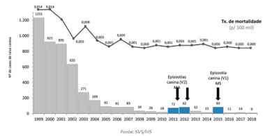
A embora com baixos valores de mortalidade nos últimos anos, a raiva humana adquirida a partir de cães permanece como grave problema de saúde.
B o número de casos de raiva humana adquirida a partir de cães vinha caindo desde 1999, porém sofreu elevação em alguns anos recentes.
C epizootias de raiva ocorridas entre cães em anos recentes não impactaram significativamente o número de casos em humanos.
D o ano de 2018 mostrou o número mais reduzido de casos de raiva humana adquirida a partir de cães.
Questão 92 · Imunidade de rebanho · 4000110389Você trabalha como médico(a) em uma Unidade de Saúde da Família e está fazendo uma visita domiciliar a uma família composta pelo pai, a mãe e 1 lho de 11 anos. Você observa que a criança não recebeu o reforço da vacina dT, que deveria ter sido dada aos 10 anos, e pergunta aos pais por quê. Eles lhe respondem que acreditam que, se as demais crianças da escola forem todas vacinadas, indiretamente, o seu lho estará protegido. Sendo assim, preferem não expor a criança à dor e ao desconforto causados por essa vacina. Com base nos seus conhecimentos sobre imunização, assinale a resposta mais adequada a ser dada a esse casal.
A Você concorda com a observação do casal sobre o fenômeno ""imunidade de rebanho"", mas alerta-os que a criança poderá encontrar pessoas doentes fora do ambiente da escola.
B Você discorda da observação do casal sobre o fenômeno ""imunidade de rebanho"", mas aceita a opinião dos pais e a sua liberdade de escolher o que acreditam ser melhor para seus filhos.
C Você concorda com a observação do casal sobre o fenômeno ""imunidade de rebanho"", mas os esclarece que se muitos pensarem da mesma forma, a proteção pode deixar de existir.
D Você discorda da observação do casal sobre o fenômeno ""imunidade de rebanho"" e os esclarece que se a criança não for vacinada, ela não estará protegida contra as doenças alvo dessa vacina.
Questão 93 · Tipos de Estudos Epidemiológicos · 4000110280O gráfico abaixo foi extraído de um estudo realizado nos Estados Unidos da América (EUA) para investigar a possível associação entre o escore Brady de 50 estados americanos em 2014 e a taxa de mortalidade infantil por acidentes com arma de fogo em 2014-2015. O escore em questão avalia quão restritiva é a legislação estadual a respeito do acesso e porte de armas de fogo e varia de -100 (menos restritiva) a +100 (mais restritiva). Com base nos seus conhecimentos sobre epidemiologia, assinale a alternativa correta.
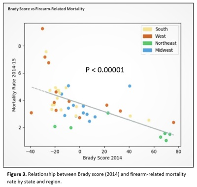
A Nesse estudo ecológico, detecta-se uma relação direta entre a restrição ao acesso de armas e a mortalidade infantil por armas de fogo.
B Nesse estudo ecológico, detecta-se uma relação inversa entre a restrição ao acesso de armas e a mortalidade infantil por armas de fogo.
C Nesse estudo de coorte retrospectivo, detecta-se uma relação direta entre a restrição ao acesso de armas e a mortalidade infantil por armas de fogo.
D Nesse estudo de coorte retrospectivo, detecta-se uma relação inversa entre a restrição ao acesso de armas e a mortalidade infantil por armas de fogo.
Questão 94 · Pediatria · Imunoglobulina antisarampo · 4000110225Uma gestante de 22 anos, no segundo trimestre de gravidez, trabalha como babá de uma criança de 2 anos. Todos os dias a criança vai para escola de manhã e ca com essa babá, no período da tarde. Na segunda-feira, a babá chega para trabalhar e os pais da criança informam que a criança está com sarampo. Entretanto, eles precisam trabalhar e pedem para a babá car cuidando da criança. A babá com receio de perder o emprego decide car. No dia seguinte, conversando com uma vizinha, a babá ca preocupada de ter se infectado com o vírus do sarampo. Ela mora na cidade há apenas 2 anos. Sempre morou na ""roça"" e não se lembra se tomou vacina contra o sarampo. Ela também não tem cartão de vacinas. No cartão de pré-natal consta apenas a vacina de tétano, que tomou no início da gestação. Decide, então, procurar seu médico de família e comunidade na unidade próxima de sua casa. Com base na situação descrita, assinale a alternativa que descreve a melhor conduta a ser tomada pelo médico de família e comunidade.
A Prescrição de imunoglobulina.
B Observação clínica e tratamento de suporte.
C Prescrição de vacina tríplice viral e imunoglobulina.
D Prescrição de vacina tríplice viral.
Revisar: possível letra faltando em enunciado
Questão 95 · Aspectos Clínicos Quadro clínico · 4000110190Criança com 5 anos de idade vem à Unidade de Saúde da Família acompanhada pela mãe que informa que a criança iniciou com quadro de febre alta há 2 dias e inapetência. Foi ao pronto atendimento, onde informaram que a criança estava com infecção de vias aéreas superiores e foi prescrito apenas antitérmico e soro siológico nasal. Hoje, a mãe informa que a criança começou com manchas vermelhas no corpo que irradiaram para os braços e pernas. Ao exame apresenta bom estado geral, temperatura de 38,5 ºC e eupneico. Otoscopia sem alterações. Na cavidade bucal observa-se hiperemia lingual e orofaringe com presença de exsudato purulento. Ao exame da pele, apresenta um exantema micropapular no tronco e membros com textura de lixa. Não apresenta sinais meníngeos e demais órgãos e sistemas estão preservados. Qual a principal hipótese diagnóstica?
A Doença de Kawasaki.
B Sarampo.
C Eritema infeccioso.
D Escarlatina.
Questão 96 · Política Nacional de Atenção Básica PNAB · Política Nacional de Humanização · 4000110152Uma paciente jovem procurou a Unidade da Saúde da Família (USF), perto do nal do expediente, com uma queixa de dor lombar que se iniciou há, aproximadamente, um mês. Ao chegar, percebeu que a USF estava lotada. Esperou alguns minutos e foi atendida por um membro da equipe que checou os seus dados, perguntou sobre o seu problema, se apresentava outras queixas e avaliou seus sinais vitais (pressão arterial, pulso e temperatura), que estavam dentro dos padrões normais. O membro da equipe explicou à jovem que a agenda do médico estava sem vagas, naquele momento, mas que ele poderia agendar uma consulta para o próximo dia, tendo em vista, as características de seu problema e ela pertencer ao território da USF. A ação específica do membro da equipe de saúde nesta situação denomina-se
A trabalho em equipe multiprofissional.
B adscrição de clientela.
C acolhimento com classificação de risco.
D acesso avançado em saúde.
Questão 97 · Acidentes por lagartas · Manif estações clínicas · 4000110110Você atende um paciente de 20 anos que estava caminhando na beira do rio, quando encostou em um galho de árvore e sentiu uma ardência e dor em queimação no braço direito. A pele cou com eritema e edema na região de contato, evoluindo com lesões puntiformes eritematosas nos pontos de inoculação das cerdas. O paciente apresentou apenas lesões locais e foi orientado a lavar o local com água corrente e colocar compressas geladas. Qual a principal complicação causada pelo envenenamento das cerdas das lagartas deste gênero?
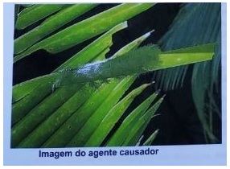
A Agitação psicomotora.
B Contraturas musculares intermitentes.
C Arritmia cardíaca.
D Manifestações hemorrágicas.
Questão 98 · Estratif icação do risco cardiovascular global e metas terapêuticas · 4000110048Você é médico(a) de família e comunidade em uma Unidade de Saúde da Família e seu primeiro paciente do dia é um homem. Ele vem sem queixas para um consulta de rotina agendada previamente. Ele tem 59 anos, é hipertenso controlado e nunca teve eventos cardiovasculares. Faz uso de losartana 50 mg/dia e ácido acetilsalicílico (AAS) 100 mg/dia. É ex- tabagista, parou há 16 anos. Apresenta exame físico normal. Você como médico(a) de família e comunidade calculou o risco para eventos cardiovasculares em 10 anos e o resultado foi de 9,4% (risco intermediário). Neste contexto, qual a melhor conduta em relação ao uso do AAS?
A Retirar, pois o paciente não apresenta alto risco cardiovascular.
B Retirar, pois o uso de AAS profilático é apenas para prevenção secundária.
C Manter, pois todo homem hipertenso acima de 50 anos deve fazer uso.
D Manter, pois todo homem acima de 50 anos deve fazer uso.
Questão 99 · Doença do Ref luxo Gastroesof ágico DRGE · 4000109990Você atua como médico(a) de família e comunidade em uma Unidade de Saúde da Família e atende um paciente do sexo masculino de 45 anos, que apresenta queixa de dor de garganta há 4 semanas. Relata que a dor é mais intensa do lado esquerdo da garganta e tem caráter intermitente, sendo mais pronunciada no período da noite e mais branda durante o dia. Relata também que, eventualmente, tem sofrido de rouquidão, no mesmo período. Nega outras queixas. Refere o consumo de 3 latas de cerveja por dia e tabagismo de ½ maço dia há 25 anos. No exame físico, você identi ca um paciente em bom estado geral e obeso, com índice de massa corporal de 32 kg/m². No exame da cavidade oral, você observa discreta hiperemia na orofaringe, mais pronunciada à esquerda, sem outras alterações. Qual seria então a hipótese diagnóstica mais provável nesse caso?
A Angina de Plaut Vincent.
B Carcinoma espinocelular de orofaringe.
C Mononucleose infecciosa.
D Doença do refluxo gastresofágico.
Revisar: possível letra faltando em enunciado
Questão 100 · Hiperaldosteronismo · 4000042588Homem, 29 anos, refere ganho de peso progressivo e diagnósticos de hipertensão arterial sistêmica e apneia obstrutiva do sono há 6 meses. Em uso de hidroclorotiazida, anlodipina e enalapril. Exame físico: peso = 79 Kg; estatura = 162 cm; IMC = 30kg/m²; PA = 160 x 100 mmHg; FC = 72 bpm. Demais sem alterações. Exames laboratoriais: Na = 141 mmol/L; K = 2,9 mmol/L; creatinina = 0,9 mg/dL; urina rotina normal; cortisol pós 1 mg de dexametasona = 1,8 mcg/dL (VR < 2); IGF-1 = 150 ng/mL (VR 83-259). Qual é a investigação diagnóstica mais indicada? Respostas: 1 12 23 34 45 56 67 78 89 100
A Metanefrinas urinárias fracionadas.
B Aldosterona e renina plasmáticas.
C GH no teste de tolerância à glicose.
D Cortisol livre urinário em 24 horas